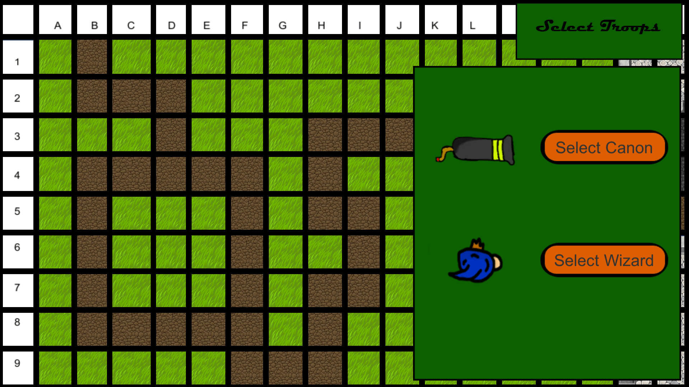
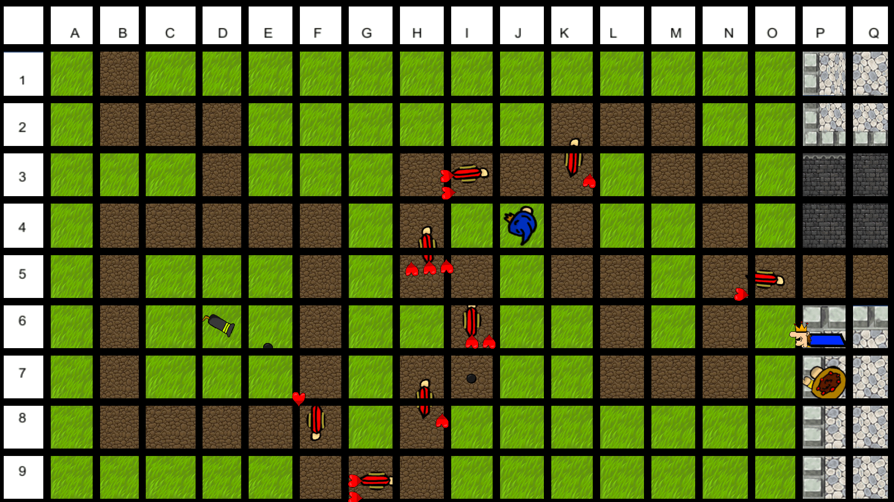

Description:
You play as a king that tries to defend his own kingdom of an other kingdom that is trying to take over, buy and put down the canons, wizards or spiders to defend your castle off, or the kingdom what you have build from the ground up will fall before your knees.
-----------------------------------------------------------------------------------------------------------------------------------------------------------------------


-----------------------------------------------------------------------------------------------------------------------------------------------------------------------
Github Repository
Game Page
-----------------------------------------------------------------------------------------------------------------------------------------------------------------------
The code next to this text, was the code for the pathway finding for the enemies, it will find every tile that has the waypoint script on and it will go then to that point of the tile and if it reaches the end, the player takes one single point of damage.
I had alot of ideas while working on this game, like when if a enemy passes a turret, it will look at the turret and fight back, but it got harder and harder to work on it over time, so I decided with a heavy heart, to cancel that feature.
I even had trouble for the UI of the game, because I had to make a shop system for when you clicked on one of these clickable patches of grass. I tried to use for every patch of grass one individual shop UI, but it had alot of problems. So I tried to use only one UI for the shop system, I looked and looked for a solution to use one UI for the shop for every patch. After trail and error, it finally worked with only 1 week before the deadline.
I even learned how to use the raycast and how then the UI would react to it for which patch of grass it being clicked on. Which was alot of fun to learn
-----------------------------------------------------------------------------------------------------------------------------------------------------------------------
This game was made for school project and I loved every second I was working on it, I had alot of trouble with this game because of the coding, sometimes I had no clue what to do with the code, but I overcame it and finished the project with only 1 week before the deadline.
-----------------------------------------------------------------------------------------------------------------------------------------------------------------------